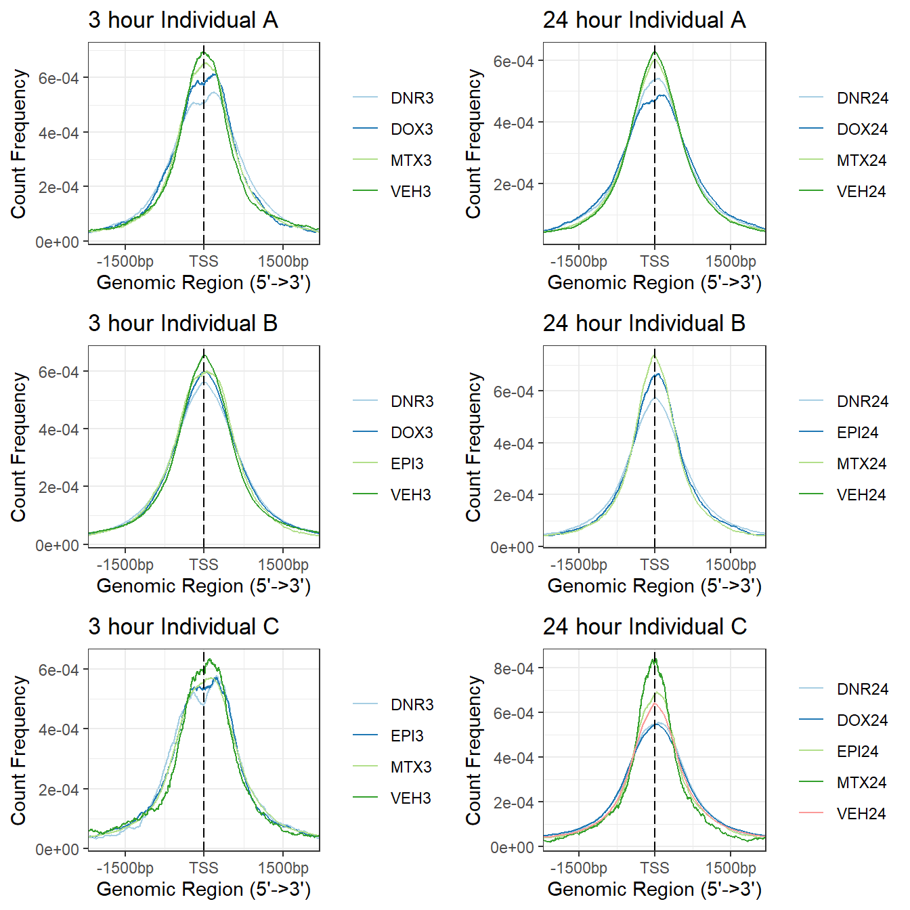
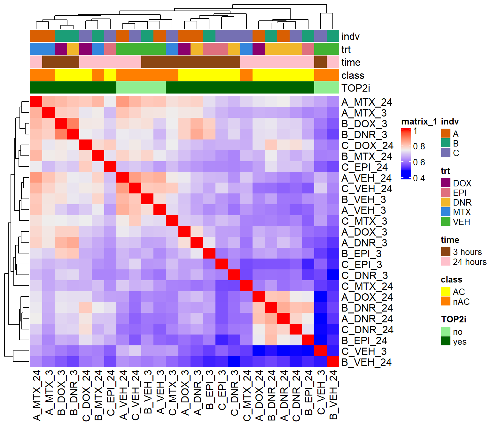
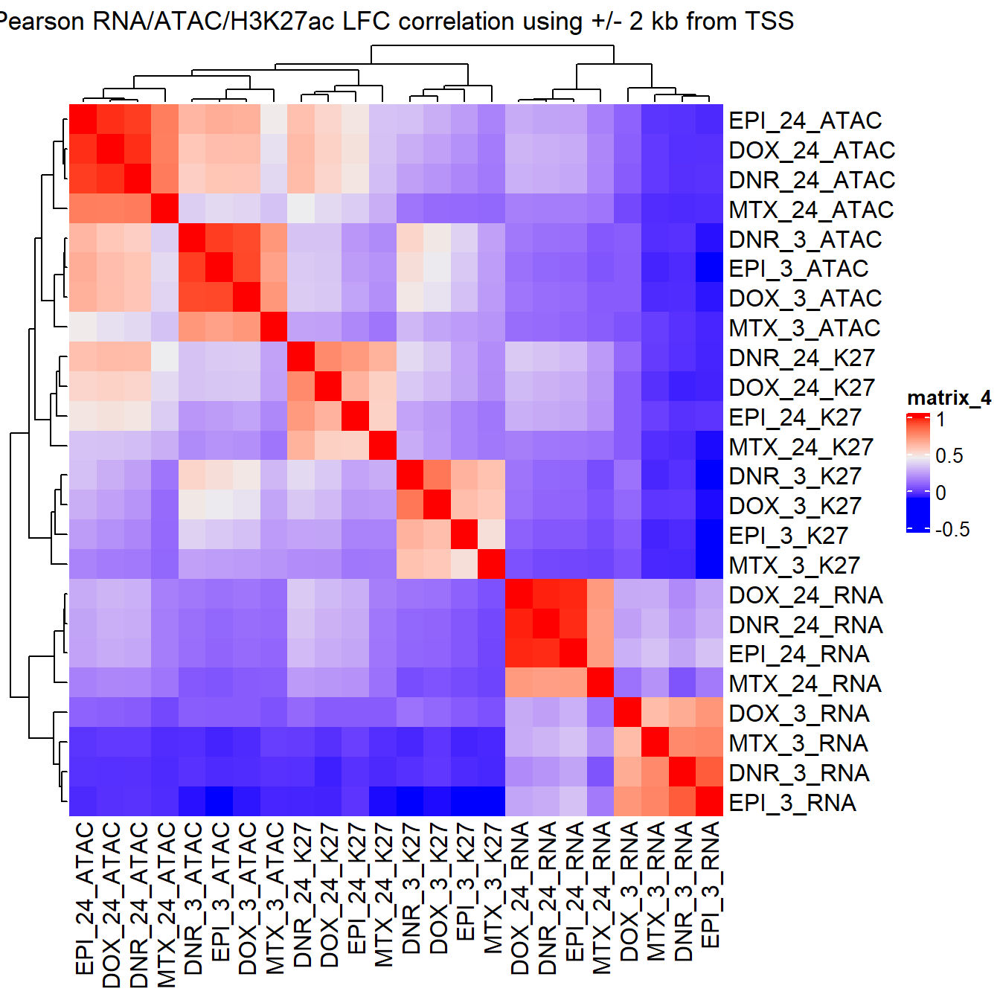
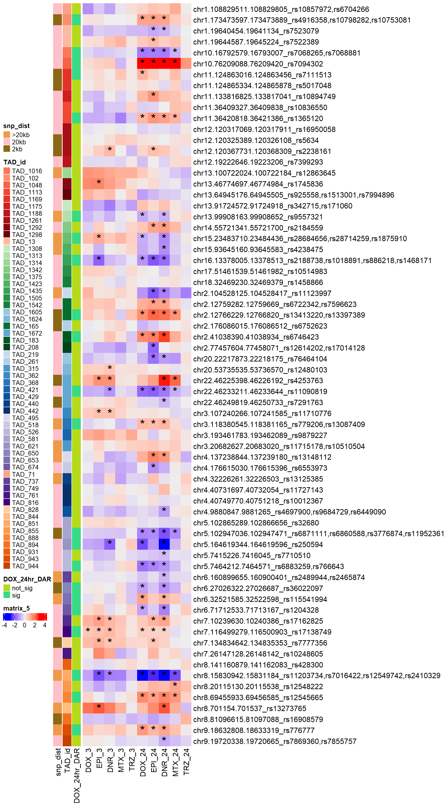

Supplemental Figures 13-21
Renee Matthews
2025-08-08
Last updated: 2025-08-11
Checks: 7 0
Knit directory: ATAC_learning/
This reproducible R Markdown analysis was created with workflowr (version 1.7.1). The Checks tab describes the reproducibility checks that were applied when the results were created. The Past versions tab lists the development history.
Great! Since the R Markdown file has been committed to the Git repository, you know the exact version of the code that produced these results.
Great job! The global environment was empty. Objects defined in the global environment can affect the analysis in your R Markdown file in unknown ways. For reproduciblity it’s best to always run the code in an empty environment.
The command set.seed(20231016) was run prior to running
the code in the R Markdown file. Setting a seed ensures that any results
that rely on randomness, e.g. subsampling or permutations, are
reproducible.
Great job! Recording the operating system, R version, and package versions is critical for reproducibility.
Nice! There were no cached chunks for this analysis, so you can be confident that you successfully produced the results during this run.
Great job! Using relative paths to the files within your workflowr project makes it easier to run your code on other machines.
Great! You are using Git for version control. Tracking code development and connecting the code version to the results is critical for reproducibility.
The results in this page were generated with repository version 9179cfd. See the Past versions tab to see a history of the changes made to the R Markdown and HTML files.
Note that you need to be careful to ensure that all relevant files for
the analysis have been committed to Git prior to generating the results
(you can use wflow_publish or
wflow_git_commit). workflowr only checks the R Markdown
file, but you know if there are other scripts or data files that it
depends on. Below is the status of the Git repository when the results
were generated:
Ignored files:
Ignored: .RData
Ignored: .Rhistory
Ignored: .Rproj.user/
Ignored: analysis/H3K27ac_integration_noM.Rmd
Ignored: data/ACresp_SNP_table.csv
Ignored: data/ARR_SNP_table.csv
Ignored: data/All_merged_peaks.tsv
Ignored: data/CAD_gwas_dataframe.RDS
Ignored: data/CTX_SNP_table.csv
Ignored: data/Collapsed_expressed_NG_peak_table.csv
Ignored: data/DEG_toplist_sep_n45.RDS
Ignored: data/FRiP_first_run.txt
Ignored: data/Final_four_data/
Ignored: data/Frip_1_reads.csv
Ignored: data/Frip_2_reads.csv
Ignored: data/Frip_3_reads.csv
Ignored: data/Frip_4_reads.csv
Ignored: data/Frip_5_reads.csv
Ignored: data/Frip_6_reads.csv
Ignored: data/GO_KEGG_analysis/
Ignored: data/HF_SNP_table.csv
Ignored: data/Ind1_75DA24h_dedup_peaks.csv
Ignored: data/Ind1_TSS_peaks.RDS
Ignored: data/Ind1_firstfragment_files.txt
Ignored: data/Ind1_fragment_files.txt
Ignored: data/Ind1_peaks_list.RDS
Ignored: data/Ind1_summary.txt
Ignored: data/Ind2_TSS_peaks.RDS
Ignored: data/Ind2_fragment_files.txt
Ignored: data/Ind2_peaks_list.RDS
Ignored: data/Ind2_summary.txt
Ignored: data/Ind3_TSS_peaks.RDS
Ignored: data/Ind3_fragment_files.txt
Ignored: data/Ind3_peaks_list.RDS
Ignored: data/Ind3_summary.txt
Ignored: data/Ind4_79B24h_dedup_peaks.csv
Ignored: data/Ind4_TSS_peaks.RDS
Ignored: data/Ind4_V24h_fraglength.txt
Ignored: data/Ind4_fragment_files.txt
Ignored: data/Ind4_fragment_filesN.txt
Ignored: data/Ind4_peaks_list.RDS
Ignored: data/Ind4_summary.txt
Ignored: data/Ind5_TSS_peaks.RDS
Ignored: data/Ind5_fragment_files.txt
Ignored: data/Ind5_fragment_filesN.txt
Ignored: data/Ind5_peaks_list.RDS
Ignored: data/Ind5_summary.txt
Ignored: data/Ind6_TSS_peaks.RDS
Ignored: data/Ind6_fragment_files.txt
Ignored: data/Ind6_peaks_list.RDS
Ignored: data/Ind6_summary.txt
Ignored: data/Knowles_4.RDS
Ignored: data/Knowles_5.RDS
Ignored: data/Knowles_6.RDS
Ignored: data/LiSiLTDNRe_TE_df.RDS
Ignored: data/MI_gwas.RDS
Ignored: data/SNP_GWAS_PEAK_MRC_id
Ignored: data/SNP_GWAS_PEAK_MRC_id.csv
Ignored: data/SNP_gene_cat_list.tsv
Ignored: data/SNP_supp_schneider.RDS
Ignored: data/TE_info/
Ignored: data/TFmapnames.RDS
Ignored: data/all_TSSE_scores.RDS
Ignored: data/all_four_filtered_counts.txt
Ignored: data/aln_run1_results.txt
Ignored: data/anno_ind1_DA24h.RDS
Ignored: data/anno_ind4_V24h.RDS
Ignored: data/annotated_gwas_SNPS.csv
Ignored: data/background_n45_he_peaks.RDS
Ignored: data/cardiac_muscle_FRIP.csv
Ignored: data/cardiomyocyte_FRIP.csv
Ignored: data/col_ng_peak.csv
Ignored: data/cormotif_full_4_run.RDS
Ignored: data/cormotif_full_4_run_he.RDS
Ignored: data/cormotif_full_6_run.RDS
Ignored: data/cormotif_full_6_run_he.RDS
Ignored: data/cormotif_probability_45_list.csv
Ignored: data/cormotif_probability_45_list_he.csv
Ignored: data/cormotif_probability_all_6_list.csv
Ignored: data/cormotif_probability_all_6_list_he.csv
Ignored: data/datasave.RDS
Ignored: data/embryo_heart_FRIP.csv
Ignored: data/enhancer_list_ENCFF126UHK.bed
Ignored: data/enhancerdata/
Ignored: data/filt_Peaks_efit2.RDS
Ignored: data/filt_Peaks_efit2_bl.RDS
Ignored: data/filt_Peaks_efit2_n45.RDS
Ignored: data/first_Peaksummarycounts.csv
Ignored: data/first_run_frag_counts.txt
Ignored: data/full_bedfiles/
Ignored: data/gene_ref.csv
Ignored: data/gwas_1_dataframe.RDS
Ignored: data/gwas_2_dataframe.RDS
Ignored: data/gwas_3_dataframe.RDS
Ignored: data/gwas_4_dataframe.RDS
Ignored: data/gwas_5_dataframe.RDS
Ignored: data/high_conf_peak_counts.csv
Ignored: data/high_conf_peak_counts.txt
Ignored: data/high_conf_peaks_bl_counts.txt
Ignored: data/high_conf_peaks_counts.txt
Ignored: data/hits_files/
Ignored: data/hyper_files/
Ignored: data/hypo_files/
Ignored: data/ind1_DA24hpeaks.RDS
Ignored: data/ind1_TSSE.RDS
Ignored: data/ind2_TSSE.RDS
Ignored: data/ind3_TSSE.RDS
Ignored: data/ind4_TSSE.RDS
Ignored: data/ind4_V24hpeaks.RDS
Ignored: data/ind5_TSSE.RDS
Ignored: data/ind6_TSSE.RDS
Ignored: data/initial_complete_stats_run1.txt
Ignored: data/left_ventricle_FRIP.csv
Ignored: data/median_24_lfc.RDS
Ignored: data/median_3_lfc.RDS
Ignored: data/mergedPeads.gff
Ignored: data/mergedPeaks.gff
Ignored: data/motif_list_full
Ignored: data/motif_list_n45
Ignored: data/motif_list_n45.RDS
Ignored: data/multiqc_fastqc_run1.txt
Ignored: data/multiqc_fastqc_run2.txt
Ignored: data/multiqc_genestat_run1.txt
Ignored: data/multiqc_genestat_run2.txt
Ignored: data/my_hc_filt_counts.RDS
Ignored: data/my_hc_filt_counts_n45.RDS
Ignored: data/n45_bedfiles/
Ignored: data/n45_files
Ignored: data/other_papers/
Ignored: data/peakAnnoList_1.RDS
Ignored: data/peakAnnoList_2.RDS
Ignored: data/peakAnnoList_24_full.RDS
Ignored: data/peakAnnoList_24_n45.RDS
Ignored: data/peakAnnoList_3.RDS
Ignored: data/peakAnnoList_3_full.RDS
Ignored: data/peakAnnoList_3_n45.RDS
Ignored: data/peakAnnoList_4.RDS
Ignored: data/peakAnnoList_5.RDS
Ignored: data/peakAnnoList_6.RDS
Ignored: data/peakAnnoList_Eight.RDS
Ignored: data/peakAnnoList_full_motif.RDS
Ignored: data/peakAnnoList_n45_motif.RDS
Ignored: data/siglist_full.RDS
Ignored: data/siglist_n45.RDS
Ignored: data/summarized_peaks_dataframe.txt
Ignored: data/summary_peakIDandReHeat.csv
Ignored: data/test.list.RDS
Ignored: data/testnames.txt
Ignored: data/toplist_6.RDS
Ignored: data/toplist_full.RDS
Ignored: data/toplist_full_DAR_6.RDS
Ignored: data/toplist_n45.RDS
Ignored: data/trimmed_seq_length.csv
Ignored: data/unclassified_full_set_peaks.RDS
Ignored: data/unclassified_n45_set_peaks.RDS
Ignored: data/xstreme/
Untracked files:
Untracked: RNA_seq_integration.Rmd
Untracked: Rplot.pdf
Untracked: Sig_meta
Untracked: analysis/.gitignore
Untracked: analysis/AF_HF_SNP_DAR_paper.Rmd
Untracked: analysis/Cormotif_analysis_testing diff.Rmd
Untracked: analysis/Diagnosis-tmm.Rmd
Untracked: analysis/Expressed_RNA_associations.Rmd
Untracked: analysis/IF_counts_20x.Rmd
Untracked: analysis/Jaspar_motif_DAR_paper.Rmd
Untracked: analysis/LFC_corr.Rmd
Untracked: analysis/SVA.Rmd
Untracked: analysis/Tan2020.Rmd
Untracked: analysis/making_master_peaks_list.Rmd
Untracked: analysis/my_hc_filt_counts.csv
Untracked: code/Concatenations_for_export.R
Untracked: code/IGV_snapshot_code.R
Untracked: code/LongDARlist.R
Untracked: code/just_for_Fun.R
Untracked: my_plot.pdf
Untracked: my_plot.png
Untracked: output/cormotif_probability_45_list.csv
Untracked: output/cormotif_probability_all_6_list.csv
Untracked: setup.RData
Unstaged changes:
Modified: ATAC_learning.Rproj
Modified: analysis/AC_shared_analysis.Rmd
Modified: analysis/AF_HF_SNPs.Rmd
Modified: analysis/Cardiotox_SNPs.Rmd
Modified: analysis/Cormotif_analysis.Rmd
Modified: analysis/DEG_analysis.Rmd
Modified: analysis/DOX_DAR_heatmap.Rmd
Modified: analysis/Figure_4.Rmd
Modified: analysis/H3K27ac_integration.Rmd
Modified: analysis/Jaspar_motif.Rmd
Modified: analysis/Jaspar_motif_ff.Rmd
Modified: analysis/SNP_TAD_peaks.Rmd
Modified: analysis/TE_analysis_ALL_DAR.Rmd
Modified: analysis/TE_analysis_norm.Rmd
Modified: analysis/final_four_analysis.Rmd
Modified: analysis/index.Rmd
Note that any generated files, e.g. HTML, png, CSS, etc., are not included in this status report because it is ok for generated content to have uncommitted changes.
These are the previous versions of the repository in which changes were
made to the R Markdown (analysis/Supp_Fig_12-19.Rmd) and
HTML (docs/Supp_Fig_12-19.html) files. If you’ve configured
a remote Git repository (see ?wflow_git_remote), click on
the hyperlinks in the table below to view the files as they were in that
past version.
| File | Version | Author | Date | Message |
|---|---|---|---|---|
| Rmd | 9179cfd | reneeisnowhere | 2025-08-11 | wflow_publish("analysis/Supp_Fig_12-19.Rmd") |
| html | bbb4cff | reneeisnowhere | 2025-08-11 | Build site. |
| Rmd | 0cef2ce | reneeisnowhere | 2025-08-11 | wflow_publish("analysis/Supp_Fig_12-19.Rmd") |
| html | a3c4cdd | reneeisnowhere | 2025-05-01 | Build site. |
| html | b5ac214 | reneeisnowhere | 2025-03-20 | Build site. |
| Rmd | 58be8ae | reneeisnowhere | 2025-03-20 | updates to supplementary files |
| Rmd | ea368e6 | reneeisnowhere | 2025-03-20 | updates to supplementary files |
| html | 4a22bff | E. Renee Matthews | 2025-03-05 | Build site. |
| html | 77a569b | E. Renee Matthews | 2025-02-27 | Build site. |
| Rmd | 8435f1f | E. Renee Matthews | 2025-02-27 | adding figures |
| Rmd | fcc1425 | E. Renee Matthews | 2025-02-27 | Build site. |
| Rmd | 337980a | E. Renee Matthews | 2025-02-27 | updates to plot |
| Rmd | 37c7d47 | E. Renee Matthews | 2025-02-27 | wflow_git_commit("analysis/Supp_Fig_12-19.Rmd") |
library(tidyverse)
library(kableExtra)
library(broom)
library(RColorBrewer)
library(ChIPseeker)
library("TxDb.Hsapiens.UCSC.hg38.knownGene")
library("org.Hs.eg.db")
library(rtracklayer)
library(ggfortify)
library(readr)
library(BiocGenerics)
library(gridExtra)
library(VennDiagram)
library(scales)
library(ggVennDiagram)
library(BiocParallel)
library(ggpubr)
library(edgeR)
library(genomation)
library(ggsignif)
library(plyranges)
library(ggrepel)
library(ComplexHeatmap)
library(cowplot)
library(smplot2)
library(readxl)
library(devtools)
library(vargen)
library(eulerr)
library(limma)
library(epitools)
library(circlize)Figure S13: H3K27-acetylated regions are enriched at transcription start sites.
knitr::include_graphics("assets/Fig\ S13.png", error=FALSE)
| Version | Author | Date |
|---|---|---|
| 50f3de9 | E. Renee Matthews | 2025-02-21 |
knitr::include_graphics("docs/assets/Fig\ S13.png",error = FALSE)
txdb <- TxDb.Hsapiens.UCSC.hg38.knownGene
###taken from Peak_calling rmd
# first get peakfiles (using .narrowPeak files from MACS2 calling) and upload functions
TSS = getBioRegion(TxDb=txdb, upstream=2000, downstream=2000, by = "gene",
type = "start_site")
#### EXAMPLE OF CODE #####
# ind4_V24hpeaks_gr <- prepGRangeObj(ind4_V24hpeaks)
# ind1_DA24hpeaks_gr <- prepGRangeObj((ind1_DA24hpeaks))
# H3K27ac_list <- GRangesList(ind1_DA24hpeaks_gr, ind4_V24hpeaks_gr)
# # ##plotting the TSS average window (making an overlap of each using Epi_list as list holder)
# H3K27ac_list_tagMatrix = lapply(H3K27ac_list, getTagMatrix, windows = TSS)
# plotAvgProf(H3K27ac_list_tagMatrix, xlim=c(-3000, 3000), ylab = "Count Frequency")
#plotPeakProf(H3K27ac_list_tagMatrix, facet = "none", conf = 0.95)
## What I did here: I called all my narrowpeak files
# peakfiles1 <- choose.files()
##these were practice for getting file names and shortening for the for loop below
# testname <- basename(peakfiles1[1])
# str_split_i(testname, "_",3)
##This loop first established a list then (because I already knew the list had 12 files)
## I then imported each of these onto that list. Once I had the list, I stored it as
## an R object,
IndA_peaks <- list()
for (file in 1:8){
testname <- basename(peakfiles1[file])
banana_peel <- str_split_i(testname, "_",3)
IndA_peaks[[banana_peel]] <- readPeakFile(peakfiles1[file])
}
saveRDS(IndA_peaks, "data/Final_four_data/H3K27ac_files/IndA_peaks_list.RDS")
# I then called annotatePeak on that list object, and stored that as a R object for later retrieval.)
peakAnnoList_1 <- lapply(IndA_peaks, annotatePeak, tssRegion =c(-2000,2000), TxDb= txdb)
saveRDS(peakAnnoList_1, "data/Final_four_data/H3K27ac_files/IndA_peakAnnoList.RDS")
promoter <- getPromoters(TxDb=txdb, upstream=3000, downstream=3000)
tagMatrix_C <- lapply(IndC_peaks,getTagMatrix, windows=promoter)
plotAvgProf(tagMatrix_C, xlim = c(-3000,3000),xlab = "Genomic Region (5'->3')", ylab = "Read Count Frequency")
# saveRDS(tagMatrix_C, "data/Final_four_data/H3K27ac_files/IndC_tagMatrix.RDS")Making the plot
##load tagMatrix files from above
tagMatrix_A <- readRDS("data/Final_four_data/H3K27ac_files/IndA_tagMatrix.RDS")
tagMatrix_B <- readRDS("data/Final_four_data/H3K27ac_files/IndB_tagMatrix.RDS")
tagMatrix_C <- readRDS("data/Final_four_data/H3K27ac_files/IndC_tagMatrix.RDS")
###making the plots and storing the 3 hour as an object
a1<- plotAvgProf(tagMatrix_A[c(1,3,5,7)], xlim=c(-3000, 3000), ylab = "Count Frequency")+ ggtitle("3 hour Individual A" )+coord_cartesian(xlim=c(-2000,2000))>> plotting figure... 2025-08-11 1:16:19 PM b1 <- plotAvgProf(tagMatrix_B[c(1,3,4,7)], xlim=c(-3000, 3000), ylab = "Count Frequency")+ ggtitle("3 hour Individual B" )+coord_cartesian(xlim=c(-2000,2000))>> plotting figure... 2025-08-11 1:16:19 PM c1 <- plotAvgProf(tagMatrix_C[c(1,4,6,8)], xlim=c(-3000, 3000), ylab = "Count Frequency")+ ggtitle("3 hour Individual C" )+coord_cartesian(xlim=c(-2000,2000))>> plotting figure... 2025-08-11 1:16:20 PM ### making the plots and storing the 24 hour as an object
a2<- plotAvgProf(tagMatrix_A[c(2,4,6,8)], xlim=c(-3000, 3000), ylab = "Count Frequency")+ ggtitle("24 hour Individual A" )+coord_cartesian(xlim=c(-2000,2000))>> plotting figure... 2025-08-11 1:16:20 PM b2 <- plotAvgProf(tagMatrix_B[c(2,5,6,8)], xlim=c(-3000, 3000), ylab = "Count Frequency")+ ggtitle("24 hour Individual B" )+coord_cartesian(xlim=c(-2000,2000))>> plotting figure... 2025-08-11 1:16:20 PM c2 <- plotAvgProf(tagMatrix_C[c(2,3,5,7,9)], xlim=c(-3000, 3000), ylab = "Count Frequency")+ ggtitle("24 hour Individual C" )+coord_cartesian(xlim=c(-2000,2000))>> plotting figure... 2025-08-11 1:16:20 PM plot_grid(a1,a2, b1,b2,c1,c2, axis="l",align = "hv",nrow=3, ncol=2)
| Version | Author | Date |
|---|---|---|
| 77a569b | E. Renee Matthews | 2025-02-27 |
Figure S14: H3K27ac CUT&Tag sequencing data separate by time and drug treatment.
H3K27ac_counts <- read_delim("data/Final_four_data/H3K27ac_files/H3K27ac_counts_file.txt", delim= "\t")
corr_lcpmH3K27ac <- H3K27ac_counts %>%
column_to_rownames("Geneid") %>%
cpm(.,log=TRUE) %>%
cor()
filmat_groupmat_col <- data.frame(timeset = colnames(corr_lcpmH3K27ac))
counts_corr_mat <- filmat_groupmat_col %>%
separate(timeset, into = c("indv","trt","time"), sep= "_") %>%
mutate(time = factor(time, levels = c("3", "24"), labels= c("3 hours","24 hours"))) %>%
mutate(trt = factor(trt, levels = c("DOX","EPI", "DNR", "MTX","VEH"))) %>%
mutate(class = if_else(trt == "DNR", "AC", if_else(
trt == "DOX", "AC", if_else(trt == "EPI", "AC", "nAC")
))) %>%
mutate(TOP2i = if_else(trt == "DNR", "yes", if_else(
trt == "DOX", "yes", if_else(trt == "EPI", "yes", if_else(trt == "MTX", "yes", "no"))))) %>%
mutate(indv=factor(indv, levels = c("A","B","C")))
mat_colors <- list(
trt= c("#F1B72B","#8B006D","#DF707E","#3386DD","#41B333"),
indv=c(A="#1B9E77",B= "#D95F02" ,C="#7570B3"),
time=c("pink", "chocolate4"),
class=c("yellow1","darkorange1"),
TOP2i =c("darkgreen","lightgreen"))
names(mat_colors$trt) <- unique(counts_corr_mat$trt)
names(mat_colors$indv) <- unique(counts_corr_mat$indv)
names(mat_colors$time) <- unique(counts_corr_mat$time)
names(mat_colors$class) <- unique(counts_corr_mat$class)
names(mat_colors$TOP2i) <- unique(counts_corr_mat$TOP2i)
htanno <- ComplexHeatmap::HeatmapAnnotation(df = counts_corr_mat, col = mat_colors)
ComplexHeatmap::Heatmap(corr_lcpmH3K27ac, top_annotation = htanno)
| Version | Author | Date |
|---|---|---|
| bbb4cff | reneeisnowhere | 2025-08-11 |
Figure S18: Drug response associates with time and molecular phenotype.
pearson_cor_mat_2kb <- cor(All_data_2kb_mat,method = "pearson", use = "pairwise.complete.obs")
ComplexHeatmap::Heatmap(pearson_cor_mat_2kb,
column_title = "Pearson RNA/ATAC/H3K27ac LFC correlation using +/- 2 kb from TSS ")
Figure S19: DARs are present within AC-induced cardiotoxicity SNP-containing TADs.
### Pulling the all regions granges list from the motif list of lists
Motif_list_gr <- readRDS("data/Final_four_data/re_analysis/Motif_list_granges.RDS")
### no change motif_list_gr names so they do not overwrite the dataframes
names(Motif_list_gr) <- paste0(names(Motif_list_gr), "_gr")
### this pulls out the all_regions_gr granges frame I made previously with 155,557 regions listed
list2env(Motif_list_gr[10],envir= .GlobalEnv)<environment: R_GlobalEnv>annotated_DARs<- readRDS("data/Final_four_data/re_analysis/DOX_DAR_annotated_peaks_chipannno.RDS")
Left_ventricle_TAD <- import(con = "C://Users/renee/Downloads/hg38.TADs/hg38/VentricleLeft_STL003_Leung_2015-raw_TADs.txt", format = "bed",genome="hg38")
mcols(Left_ventricle_TAD)$TAD_id <- paste0("TAD_", seq_along(Left_ventricle_TAD))
Schneider_all_SNPS <- read_delim("data/other_papers/Schneider_all_SNPS.txt",
delim = "\t", escape_double = FALSE,
trim_ws = TRUE)
Schneider_all_SNPS_df <- Schneider_all_SNPS %>%
dplyr::rename("RSID"="#Uploaded_variation") %>%
dplyr::select(RSID,Location,SYMBOL,Gene, SOURCE) %>%
distinct(RSID,Location,SYMBOL,.keep_all = TRUE) %>%
dplyr::rename("Close_SYMBOL"="SYMBOL") %>%
dplyr::filter(!str_starts(Location, "H")) %>%
separate_wider_delim(Location,delim=":",names=c("Chr","Coords")) %>%
separate_wider_delim(Coords,delim= "-", names= c("Start","End")) %>%
mutate(Chr=paste0("chr",Chr)) %>%
group_by(RSID) %>%
reframe(Chr=unique(Chr),
Start=unique(Start),
End=unique(End),
Close_SYMBOL=paste(unique(Close_SYMBOL),collapse=";"),
Gene=paste(Gene,collapse=";"),
SOURCE=paste(SOURCE,collapse=";")
) %>%
GRanges() %>% as.data.frame
schneider_gr <-Schneider_all_SNPS_df%>%
dplyr::select(seqnames,start,end,RSID:SOURCE) %>%
distinct() %>%
GRanges()
toptable_results <- readRDS("data/Final_four_data/re_analysis/Toptable_results.RDS")
all_results <- toptable_results %>%
imap(~ .x %>% tibble::rownames_to_column(var = "rowname") %>%
mutate(source = .y)) %>%
bind_rows()
all_results_pivot <- all_results %>%
dplyr::select(genes,logFC,source) %>%
pivot_wider(., id_cols = genes, names_from = source, values_from = logFC) %>%
dplyr::select(genes,DOX_3,EPI_3,DNR_3,MTX_3,TRZ_3,DOX_24,EPI_24,DNR_24,MTX_24,TRZ_24)
Assigned_genes_toPeak <- annotated_DARs$DOX_24 %>% as.data.frame() %>%
dplyr::select(mcols.genes,annotation, geneId, distanceToTSS) %>%
dplyr::rename("Peakid"=mcols.genes)
RNA_results <-
toplistall_RNA %>%
dplyr::select(time:logFC) %>%
tidyr::unite("sample",time, id) %>%
pivot_wider(., id_cols = c(ENTREZID,SYMBOL),names_from = sample, values_from = logFC) %>%
rename_with(~ str_replace(., "hours", "RNA"))
Peak_gene_RNA_LFC <- Assigned_genes_toPeak %>%
left_join(., RNA_results, by =c("geneId"="ENTREZID"))
entrez_ids <- Assigned_genes_toPeak$geneId
gene_info <- AnnotationDbi::select(
org.Hs.eg.db,
keys = entrez_ids,
columns = c("SYMBOL"),
keytype = "ENTREZID"
)
gene_info_collapsed <- gene_info %>%
group_by(ENTREZID) %>%
summarise(SYMBOL = paste(unique(SYMBOL), collapse = ","), .groups = "drop")
toplistall_RNA <- readRDS("data/other_papers/toplistall_RNA.RDS") %>%
mutate(logFC = logFC*(-1))
Assigned_genes_toPeak <- annotated_DARs$DOX_24 %>% as.data.frame() %>%
dplyr::select(mcols.genes,annotation, geneId, distanceToTSS) %>%
dplyr::rename("Peakid"=mcols.genes)
RNA_results <-
toplistall_RNA %>%
dplyr::select(time:logFC) %>%
tidyr::unite("sample",time, id) %>%
pivot_wider(., id_cols = c(ENTREZID,SYMBOL),names_from = sample, values_from = logFC) %>%
rename_with(~ str_replace(., "hours", "RNA"))
Peak_gene_RNA_LFC <- Assigned_genes_toPeak %>%
left_join(., RNA_results, by =c("geneId"="ENTREZID"))
DOX_24_DAR <- as.data.frame(annotated_DARs$DOX_24)
EPI_24_DAR <- as.data.frame(annotated_DARs$EPI_24)
DNR_24_DAR <- as.data.frame(annotated_DARs$DNR_24)
MTX_24_DAR <- as.data.frame(annotated_DARs$MTX_24)
DOX_3_DAR <- as.data.frame(annotated_DARs$DOX_3)
EPI_3_DAR <- as.data.frame(annotated_DARs$EPI_3)
DNR_3_DAR <- as.data.frame(annotated_DARs$DNR_3)
MTX_3_DAR <- as.data.frame(annotated_DARs$MTX_3)
DOX_DAR_sig <- DOX_24_DAR %>%
dplyr::filter(mcols.adj.P.Val<0.05) %>%
distinct (mcols.genes) %>%
dplyr::rename("Peakid"="mcols.genes")
DOX_DAR_sig_3 <- DOX_3_DAR %>%
dplyr::filter(mcols.adj.P.Val<0.05) %>%
distinct (mcols.genes) %>%
dplyr::rename("Peakid"="mcols.genes")
EPI_DAR_sig <- EPI_24_DAR %>%
dplyr::filter(mcols.adj.P.Val<0.05) %>%
distinct (mcols.genes) %>%
dplyr::rename("Peakid"="mcols.genes")
EPI_DAR_sig_3 <- EPI_3_DAR %>%
dplyr::filter(mcols.adj.P.Val<0.05) %>%
distinct (mcols.genes) %>%
dplyr::rename("Peakid"="mcols.genes")
DNR_DAR_sig <- DNR_24_DAR %>%
dplyr::filter(mcols.adj.P.Val<0.05) %>%
distinct (mcols.genes) %>%
dplyr::rename("Peakid"="mcols.genes")
DNR_DAR_sig_3 <- DNR_3_DAR %>%
dplyr::filter(mcols.adj.P.Val<0.05) %>%
distinct (mcols.genes) %>%
dplyr::rename("Peakid"="mcols.genes")
MTX_DAR_sig <- MTX_24_DAR %>%
dplyr::filter(mcols.adj.P.Val<0.05) %>%
distinct (mcols.genes) %>%
dplyr::rename("Peakid"="mcols.genes")
MTX_DAR_sig_3 <- MTX_3_DAR %>%
dplyr::filter(mcols.adj.P.Val<0.05) %>%
distinct (mcols.genes) %>%
dplyr::rename("Peakid"="mcols.genes")
snp_tad_df <-
join_overlap_inner(schneider_gr, Left_ventricle_TAD) %>%
as_tibble() %>%
dplyr::select(RSID, snp_start = start, snp_chr = seqnames, TAD_id)
peak_tad_df <-
join_overlap_inner(all_regions_gr, Left_ventricle_TAD) %>%
as_tibble() %>%
dplyr::select(Peakid, peak_start = start, peak_chr = seqnames, TAD_id)
peak_snp_pairs <- peak_tad_df %>%
inner_join(snp_tad_df, by = "TAD_id")
test_ol <- join_overlap_intersect(Left_ventricle_TAD, schneider_gr)
df <- as.data.frame(test_ol, row.names = NULL)
TAD_SNP_ol <- test_ol %>% as.data.frame() %>%
distinct(TAD_id, RSID)
peak_snp_pairs_dist <- peak_snp_pairs %>%
mutate(distance = abs(peak_start - snp_start)) %>%
mutate(sig_24= if_else(Peakid %in% DOX_DAR_sig$Peakid, "sig","not_sig"))
Cardiotox_gwas_df <- peak_snp_pairs_dist %>%
dplyr::filter(sig_24=="sig") %>%
group_by(TAD_id,RSID) %>%
slice_min(order_by = distance, with_ties = FALSE) %>%
ungroup() %>%
arrange(snp_chr,snp_start) %>%
left_join(., all_results_pivot, by=c("Peakid"="genes")) %>%
tidyr::unite(., name,Peakid,RSID)
Cardiotox_gwas_collaped_df <-
peak_snp_pairs_dist %>%
dplyr::filter(sig_24=="sig") %>%
group_by(TAD_id,RSID) %>%
slice_min(order_by = distance, with_ties = FALSE) %>%
ungroup() %>%
arrange(snp_chr,snp_start) %>%
group_by(Peakid, peak_chr, peak_start, TAD_id, sig_24) %>%
summarise(
min_distance = min(distance),
mean_distance = mean(distance),
snp_list = paste(unique(RSID), collapse = ","),
.groups = "drop"
) %>%
left_join(., all_results_pivot, by=c("Peakid"="genes")) %>%
left_join(., Peak_gene_RNA_LFC, by=c("Peakid"="Peakid")) %>%
left_join(.,gene_info_collapsed, by=c("geneId"="ENTREZID")) %>%
mutate(SYMBOL=if_else(is.na(SYMBOL.x),SYMBOL.y,if_else(SYMBOL.x==SYMBOL.y, SYMBOL.x,paste0(SYMBOL.x,"_",SYMBOL.y)))) %>%
tidyr::unite(., name,Peakid,SYMBOL,snp_list) %>%
mutate(snp_dist=case_when(min_distance <2000 ~"2kb",
min_distance > 2000 & min_distance<20000 ~ "20kb",
min_distance >20000 ~">20kb"))
left_ventricle_ol <- join_overlap_inner(all_regions_gr ,Left_ventricle_TAD) %>%
as.data.frame() %>%
distinct(Peakid,.keep_all = TRUE) %>%
dplyr::filter(TAD_id %in% TAD_SNP_ol$TAD_id)
# peak_df <- as.data.frame(left_ventricle_ol)
# SNP_df <- as.data.frame(snp_ol)
reds <- colorRampPalette(brewer.pal(9, "Reds")[3:9])(12)
greens <- colorRampPalette(brewer.pal(9, "Greens")[3:9])(12)
blues <- colorRampPalette(brewer.pal(9, "Blues")[3:9])(12)
purples <- colorRampPalette(brewer.pal(9, "Purples")[3:9])(12)
oranges <- colorRampPalette(brewer.pal(9, "Oranges")[3:9])(12)
tads <- unique(peak_snp_pairs$TAD_id)
num_tads <- length(tads)
color_spectrum <- c(reds, greens, blues, purples, oranges)[1:num_tads]
if (num_tads > length(color_spectrum)) {
stop("Not enough colors for TADs. Add more palettes.")
}
tad_colors <- color_spectrum[1:num_tads]
names(tad_colors) <- tads # Assign color names to TAD IDs
peak_snp_pairs_dist <- peak_snp_pairs %>%
mutate(distance = abs(peak_start - snp_start)) %>%
mutate(sig_24= if_else(Peakid %in% DOX_DAR_sig$Peakid, "sig","not_sig"))
ATAC_all_adj.pvals <- all_results%>%
dplyr::select(source,genes,adj.P.Val) %>%
pivot_wider(id_cols=genes, values_from = adj.P.Val, names_from = source)
# saveRDS(ATAC_all_adj.pvals,"data/Final_four_data/re_analysis/ATAC_all_adj_pvals.RDS")
sig_mat_cardiotox <- ATAC_all_adj.pvals %>%
dplyr::filter(genes %in% peak_snp_pairs_dist$Peakid) %>%
left_join(peak_snp_pairs_dist, by=c("genes"="Peakid")) %>%
group_by(TAD_id,RSID) %>%
slice_min(order_by = distance, with_ties = FALSE) %>%
ungroup() %>%
arrange(snp_chr,snp_start) %>%
group_by(genes, peak_chr, peak_start, TAD_id, sig_24) %>%
summarise(
min_distance = min(distance),
mean_distance = mean(distance),
snp_list = paste(unique(RSID), collapse = ","),
.groups = "drop"
) %>%
left_join(ATAC_all_adj.pvals) %>%
tidyr::unite(., name,genes,snp_list) %>%
dplyr::select(name, DNR_3:TRZ_24) %>%
column_to_rownames("name") %>%
as.matrix()
AR_Cardiotox_gwas_collaped_df <-
peak_snp_pairs_dist %>%
# dplyr::filter(sig_24=="sig") %>%
group_by(TAD_id,RSID) %>%
slice_min(order_by = distance, with_ties = FALSE) %>%
ungroup() %>%
arrange(snp_chr,snp_start) %>%
group_by(Peakid, peak_chr, peak_start, TAD_id, sig_24) %>%
summarise(
min_distance = min(distance),
mean_distance = mean(distance),
snp_list = paste(unique(RSID), collapse = ","),
.groups = "drop"
) %>%
left_join(., all_results_pivot, by=c("Peakid"="genes")) %>%
tidyr::unite(., name,Peakid,snp_list) %>%
mutate(snp_dist=case_when(min_distance <2000 ~"2kb",
min_distance > 2000 & min_distance<20000 ~ "20kb",
min_distance >20000 ~">20kb"))
Cardotox_mat_2 <- AR_Cardiotox_gwas_collaped_df %>%
dplyr::select(name,DOX_3:TRZ_24) %>%
column_to_rownames("name") %>%
as.matrix()
annot_map_df_2 <- AR_Cardiotox_gwas_collaped_df %>%
dplyr::select(name,snp_dist,sig_24) %>%
column_to_rownames("name")
annot_map_2 <-
ComplexHeatmap::rowAnnotation(
snp_dist=AR_Cardiotox_gwas_collaped_df$snp_dist,
TAD_id=AR_Cardiotox_gwas_collaped_df$TAD_id,
DOX_24hr_DAR=AR_Cardiotox_gwas_collaped_df$sig_24,
col= list(snp_dist=c("2kb"="goldenrod4",
"20kb"="pink",
">20kb"="tan2"),
TAD_id=tad_colors))
# all.equal(rownames(sig_mat_cardiotox), rownames(Cardotox_mat_2))
# all.equal(colnames(sig_mat_cardiotox), colnames(Cardotox_mat_2))
#
# setdiff(colnames(sig_mat_cardiotox), colnames(Cardotox_mat_2))
# setdiff(colnames(Cardotox_mat_2), colnames(sig_mat_cardiotox))
#
# intersect(colnames(sig_mat_cardiotox), colnames(Cardotox_mat_2))
# setdiff(colnames(sig_mat_cardiotox), colnames(Cardotox_mat_2))
# setdiff(colnames(Cardotox_mat_2), colnames(sig_mat_cardiotox))
simply_map_lfc_2 <- ComplexHeatmap::Heatmap(Cardotox_mat_2,
left_annotation = annot_map_2,
show_row_names = TRUE,
row_names_max_width= ComplexHeatmap::max_text_width(rownames(Cardotox_mat_2), gp=gpar(fontsize=14)),
heatmap_legend_param = list(direction = "horizontal"),
show_column_names = TRUE,
cluster_rows = FALSE,
cluster_columns = FALSE,
cell_fun = function(j, i, x, y, width, height, fill) {
rowname <- rownames(Cardotox_mat_2)[i]
colname <- colnames(Cardotox_mat_2)[j]
if (!is.na(sig_mat_cardiotox[rowname, colname]) &&
sig_mat_cardiotox[rowname, colname] < 0.05) {
grid.text("*", x, y, gp = gpar(fontsize = 20))
}
})
ComplexHeatmap::draw(simply_map_lfc_2,
merge_legend = TRUE,
heatmap_legend_side = "left",
annotation_legend_side = "left")
| Version | Author | Date |
|---|---|---|
| bbb4cff | reneeisnowhere | 2025-08-11 |
Figure S20: DARs overlap AF SNPs
gwas_HF <- readRDS("data/other_papers/HF_gwas_association_downloaded_2025_01_23_EFO_0003144_withChildTraits.RDS")
gwas_ARR <- readRDS("data/other_papers/AF_gwas_association_downloaded_2025_01_23_EFO_0000275.RDS")
gwas_IHD <- readRDS("data/other_papers/IHD_IHD_gwas_association_downloaded_2025_06_26_EFO_1001375_withChildTraits")
gwas_CAD <- readRDS( "data/CAD_gwas_dataframe.RDS")
gwas_ACresp <- readRDS("data/gwas_3_dataframe.RDS")
Short_gwas_gr <-
gwas_ARR %>%
distinct(SNPS,.keep_all = TRUE) %>%
dplyr::select(CHR_ID, CHR_POS,SNPS) %>%
mutate(gwas="AF") %>%
rbind(gwas_HF %>%
distinct(SNPS,.keep_all = TRUE) %>%
dplyr::select(CHR_ID, CHR_POS,SNPS) %>%
mutate(gwas="HF")) %>%
rbind(gwas_IHD %>%
distinct(SNPS,.keep_all = TRUE) %>%
dplyr::select(CHR_ID, CHR_POS,SNPS) %>%
mutate(gwas="IHD")) %>%
rbind(gwas_CAD %>%
distinct(SNPS,.keep_all = TRUE) %>%
dplyr::select(CHR_ID, CHR_POS,SNPS) %>%
mutate(gwas="CAD")) %>%
na.omit() %>%
mutate(seqnames=paste0("chr",CHR_ID), CHR_POS=as.numeric(CHR_POS)) %>%
na.omit() %>%
mutate(start=CHR_POS, end=CHR_POS, width=1) %>%
GRanges()
all_regions_peak <- all_results %>%
dplyr::select(source,genes, logFC,adj.P.Val) %>%
mutate("Peakid"=genes) %>%
dplyr::filter(source=="DOX_3") %>%
distinct(Peakid)
AF_ol_peaks <- join_overlap_inner(all_regions_gr, Short_gwas_gr) %>%
as.data.frame() %>%
dplyr::filter(gwas =="AF") %>%
distinct(Peakid)
HF_ol_peaks <- join_overlap_inner(all_regions_gr, Short_gwas_gr) %>%
as.data.frame() %>%
dplyr::filter(gwas =="HF") %>%
distinct(Peakid)
IHD_ol_peaks <- join_overlap_inner(all_regions_gr, Short_gwas_gr) %>%
as.data.frame() %>%
dplyr::filter(gwas =="IHD") %>%
distinct(Peakid)
CAD_ol_peaks <- join_overlap_inner(all_regions_gr, Short_gwas_gr) %>%
as.data.frame() %>%
dplyr::filter(gwas =="CAD") %>%
distinct(Peakid)
HF_AF_ol <- join_overlap_inner(all_regions_gr, Short_gwas_gr) %>%
as.data.frame() %>%
dplyr::filter(gwas =="AF"|gwas=="HF")
SNP_overlaps <- join_overlap_inner(all_regions_gr, Short_gwas_gr) %>%
as.data.frame()
all_results_LFC <- all_results %>% dplyr::select(source,genes,logFC) %>%
pivot_wider(id_cols=genes, values_from = logFC, names_from = source) %>%
dplyr::rename("Peakid"=genes)
ATAC_all_adj.pvals <- readRDS("data/Final_four_data/re_analysis/ATAC_all_adj_pvals.RDS")
AF_heatmap_df <- SNP_overlaps %>%
as.data.frame() %>%
dplyr::filter(gwas=="AF") %>%
group_by(Peakid) %>%
summarise(SNPS=paste(unique(SNPS),collapse = ";"))
AF_mat <- AF_heatmap_df %>%
left_join(., all_results_LFC, by=c("Peakid"="Peakid")) %>%
tidyr::unite(., name,Peakid,SNPS) %>%
column_to_rownames("name") %>%
as.matrix()
AF_sig_mat <- AF_heatmap_df %>%
left_join(., ATAC_all_adj.pvals, by=c("Peakid"="genes")) %>%
tidyr::unite(., name,Peakid,SNPS) %>%
column_to_rownames("name") %>%
as.matrix()
# desired_order <- c("DOX_3", "EPI_3", "DNR_3", "MTX_3", "TRZ_3", "DOX_24", "EPI_24", "DNR_24", "MTX_24", "TRZ_24")
#
# AF_mat <- AF_mat[, desired_order]
# AF_sig_mat <- AF_sig_mat[, desired_order] # reorder your significance matrix the same way
simply_AF_lfc <- ComplexHeatmap::Heatmap(AF_mat,
show_row_names = TRUE,
row_names_max_width=
ComplexHeatmap::max_text_width(rownames(AF_mat), gp=gpar(fontsize=14)),
heatmap_legend_param = list(direction = "horizontal"),
column_title = "AF_SNPS",
show_column_names = TRUE,
cluster_rows = FALSE,
cluster_columns = FALSE,
cell_fun = function(j, i, x, y, width, height, fill) {
rowname <- rownames(AF_mat)[i]
colname <- colnames(AF_mat)[j]
if (!is.na(AF_sig_mat[rowname, colname]) &&
AF_sig_mat[rowname, colname] < 0.05) {
grid.text("*", x, y, gp = gpar(fontsize = 20))
}
})
ComplexHeatmap::draw(simply_AF_lfc,
merge_legend = TRUE,
heatmap_legend_side = "left",
annotation_legend_side = "left")
| Version | Author | Date |
|---|---|---|
| bbb4cff | reneeisnowhere | 2025-08-11 |
Figure S21: DARs overlap HF SNPs
HF_heatmap_df <- SNP_overlaps %>%
as.data.frame() %>%
dplyr::filter(gwas=="HF") %>%
group_by(Peakid) %>%
summarise(SNPS=paste(unique(SNPS),collapse = ";"))
HF_mat <- HF_heatmap_df %>%
left_join(., all_results_LFC, by=c("Peakid"="Peakid")) %>%
tidyr::unite(., name,Peakid,SNPS) %>%
column_to_rownames("name") %>%
as.matrix()
HF_sig_mat <- HF_heatmap_df %>%
left_join(., ATAC_all_adj.pvals, by=c("Peakid"="genes")) %>%
tidyr::unite(., name,Peakid,SNPS) %>%
column_to_rownames("name") %>%
as.matrix()
simply_HF_lfc <- ComplexHeatmap::Heatmap(HF_mat,
show_row_names = TRUE,
row_names_max_width=
ComplexHeatmap::max_text_width(rownames(HF_mat), gp=gpar(fontsize=14)),
heatmap_legend_param = list(direction = "horizontal"),
column_title = "HF_SNPS",
show_column_names = TRUE,
cluster_rows = FALSE,
cluster_columns = FALSE,
cell_fun = function(j, i, x, y, width, height, fill) {
rowname <- rownames(HF_mat)[i]
colname <- colnames(HF_mat)[j]
if (!is.na(HF_sig_mat[rowname, colname]) &&
HF_sig_mat[rowname, colname] < 0.05) {
grid.text("*", x, y, gp = gpar(fontsize = 20))
}
})
ComplexHeatmap::draw(simply_HF_lfc,
merge_legend = TRUE,
heatmap_legend_side = "left",
annotation_legend_side = "left")
| Version | Author | Date |
|---|---|---|
| bbb4cff | reneeisnowhere | 2025-08-11 |
sessionInfo()R version 4.4.2 (2024-10-31 ucrt)
Platform: x86_64-w64-mingw32/x64
Running under: Windows 11 x64 (build 26100)
Matrix products: default
locale:
[1] LC_COLLATE=English_United States.utf8
[2] LC_CTYPE=English_United States.utf8
[3] LC_MONETARY=English_United States.utf8
[4] LC_NUMERIC=C
[5] LC_TIME=English_United States.utf8
time zone: America/Chicago
tzcode source: internal
attached base packages:
[1] grid stats4 stats graphics grDevices utils datasets
[8] methods base
other attached packages:
[1] BSgenome.Hsapiens.UCSC.hg38_1.4.5
[2] BSgenome_1.74.0
[3] BiocIO_1.16.0
[4] Biostrings_2.74.1
[5] XVector_0.46.0
[6] circlize_0.4.16
[7] epitools_0.5-10.1
[8] eulerr_7.0.2
[9] vargen_0.2.3
[10] devtools_2.4.5
[11] usethis_3.1.0
[12] readxl_1.4.5
[13] smplot2_0.2.5
[14] cowplot_1.2.0
[15] ComplexHeatmap_2.22.0
[16] ggrepel_0.9.6
[17] plyranges_1.26.0
[18] ggsignif_0.6.4
[19] genomation_1.38.0
[20] edgeR_4.4.2
[21] limma_3.62.2
[22] ggpubr_0.6.1
[23] BiocParallel_1.40.2
[24] ggVennDiagram_1.5.4
[25] scales_1.4.0
[26] VennDiagram_1.7.3
[27] futile.logger_1.4.3
[28] gridExtra_2.3
[29] ggfortify_0.4.19
[30] rtracklayer_1.66.0
[31] org.Hs.eg.db_3.20.0
[32] TxDb.Hsapiens.UCSC.hg38.knownGene_3.20.0
[33] GenomicFeatures_1.58.0
[34] AnnotationDbi_1.68.0
[35] Biobase_2.66.0
[36] GenomicRanges_1.58.0
[37] GenomeInfoDb_1.42.3
[38] IRanges_2.40.1
[39] S4Vectors_0.44.0
[40] BiocGenerics_0.52.0
[41] ChIPseeker_1.42.1
[42] RColorBrewer_1.1-3
[43] broom_1.0.9
[44] kableExtra_1.4.0
[45] lubridate_1.9.4
[46] forcats_1.0.0
[47] stringr_1.5.1
[48] dplyr_1.1.4
[49] purrr_1.1.0
[50] readr_2.1.5
[51] tidyr_1.3.1
[52] tibble_3.3.0
[53] ggplot2_3.5.2
[54] tidyverse_2.0.0
[55] workflowr_1.7.1
loaded via a namespace (and not attached):
[1] fs_1.6.6
[2] matrixStats_1.5.0
[3] bitops_1.0-9
[4] enrichplot_1.26.6
[5] httr_1.4.7
[6] doParallel_1.0.17
[7] profvis_0.4.0
[8] tools_4.4.2
[9] backports_1.5.0
[10] R6_2.6.1
[11] mgcv_1.9-3
[12] lazyeval_0.2.2
[13] GetoptLong_1.0.5
[14] urlchecker_1.0.1
[15] withr_3.0.2
[16] cli_3.6.5
[17] textshaping_1.0.1
[18] formatR_1.14
[19] Cairo_1.6-2
[20] labeling_0.4.3
[21] sass_0.4.10
[22] Rsamtools_2.22.0
[23] systemfonts_1.2.3
[24] yulab.utils_0.2.0
[25] foreign_0.8-90
[26] DOSE_4.0.1
[27] svglite_2.2.1
[28] R.utils_2.13.0
[29] dichromat_2.0-0.1
[30] sessioninfo_1.2.3
[31] plotrix_3.8-4
[32] pwr_1.3-0
[33] rstudioapi_0.17.1
[34] impute_1.80.0
[35] RSQLite_2.4.2
[36] generics_0.1.4
[37] gridGraphics_0.5-1
[38] TxDb.Hsapiens.UCSC.hg19.knownGene_3.2.2
[39] shape_1.4.6.1
[40] vroom_1.6.5
[41] gtools_3.9.5
[42] car_3.1-3
[43] GO.db_3.20.0
[44] Matrix_1.7-3
[45] ggbeeswarm_0.7.2
[46] abind_1.4-8
[47] R.methodsS3_1.8.2
[48] lifecycle_1.0.4
[49] whisker_0.4.1
[50] yaml_2.3.10
[51] carData_3.0-5
[52] SummarizedExperiment_1.36.0
[53] gplots_3.2.0
[54] qvalue_2.38.0
[55] SparseArray_1.6.2
[56] blob_1.2.4
[57] promises_1.3.3
[58] crayon_1.5.3
[59] miniUI_0.1.2
[60] ggtangle_0.0.7
[61] lattice_0.22-7
[62] KEGGREST_1.46.0
[63] magick_2.8.7
[64] pillar_1.11.0
[65] knitr_1.50
[66] fgsea_1.32.4
[67] rjson_0.2.23
[68] boot_1.3-31
[69] codetools_0.2-20
[70] fastmatch_1.1-6
[71] glue_1.8.0
[72] getPass_0.2-4
[73] ggfun_0.2.0
[74] remotes_2.5.0
[75] data.table_1.17.8
[76] vctrs_0.6.5
[77] png_0.1-8
[78] treeio_1.30.0
[79] cellranger_1.1.0
[80] gtable_0.3.6
[81] cachem_1.1.0
[82] xfun_0.52
[83] mime_0.13
[84] S4Arrays_1.6.0
[85] iterators_1.0.14
[86] statmod_1.5.0
[87] ellipsis_0.3.2
[88] nlme_3.1-168
[89] ggtree_3.14.0
[90] bit64_4.6.0-1
[91] rprojroot_2.1.0
[92] bslib_0.9.0
[93] vipor_0.4.7
[94] rpart_4.1.24
[95] KernSmooth_2.23-26
[96] colorspace_2.1-1
[97] DBI_1.2.3
[98] Hmisc_5.2-3
[99] nnet_7.3-20
[100] seqPattern_1.38.0
[101] ggrastr_1.0.2
[102] tidyselect_1.2.1
[103] processx_3.8.6
[104] bit_4.6.0
[105] compiler_4.4.2
[106] curl_6.4.0
[107] git2r_0.36.2
[108] htmlTable_2.4.3
[109] xml2_1.3.8
[110] DelayedArray_0.32.0
[111] checkmate_2.3.2
[112] caTools_1.18.3
[113] callr_3.7.6
[114] digest_0.6.37
[115] rmarkdown_2.29
[116] htmltools_0.5.8.1
[117] pkgconfig_2.0.3
[118] base64enc_0.1-3
[119] MatrixGenerics_1.18.1
[120] fastmap_1.2.0
[121] htmlwidgets_1.6.4
[122] rlang_1.1.6
[123] GlobalOptions_0.1.2
[124] UCSC.utils_1.2.0
[125] shiny_1.11.1
[126] farver_2.1.2
[127] jquerylib_0.1.4
[128] zoo_1.8-14
[129] jsonlite_2.0.0
[130] GOSemSim_2.32.0
[131] R.oo_1.27.1
[132] RCurl_1.98-1.17
[133] magrittr_2.0.3
[134] Formula_1.2-5
[135] GenomeInfoDbData_1.2.13
[136] ggplotify_0.1.2
[137] patchwork_1.3.1
[138] Rcpp_1.1.0
[139] ape_5.8-1
[140] stringi_1.8.7
[141] zlibbioc_1.52.0
[142] pkgbuild_1.4.8
[143] plyr_1.8.9
[144] parallel_4.4.2
[145] splines_4.4.2
[146] hms_1.1.3
[147] locfit_1.5-9.12
[148] ps_1.9.1
[149] igraph_2.1.4
[150] pkgload_1.4.0
[151] reshape2_1.4.4
[152] futile.options_1.0.1
[153] XML_3.99-0.18
[154] evaluate_1.0.4
[155] lambda.r_1.2.4
[156] tzdb_0.5.0
[157] foreach_1.5.2
[158] httpuv_1.6.16
[159] clue_0.3-66
[160] gridBase_0.4-7
[161] xtable_1.8-4
[162] restfulr_0.0.16
[163] tidytree_0.4.6
[164] rstatix_0.7.2
[165] later_1.4.2
[166] viridisLite_0.4.2
[167] aplot_0.2.8
[168] beeswarm_0.4.0
[169] memoise_2.0.1
[170] GenomicAlignments_1.42.0
[171] cluster_2.1.8.1
[172] timechange_0.3.0